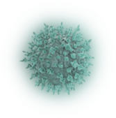
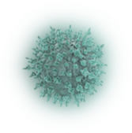

plague History
История заболеваний
Всё-ли вы знаете про Массовые эпидемии?
На данном ресурсе представлена полная информация обо всех массовых эпидемиях, напрямую коснувщихся и перевернувших историю нашей страны


История заболеваний
На данном ресурсе представлена полная информация обо всех массовых эпидемиях, напрямую коснувщихся и перевернувших историю нашей страны


Тяжелое инфекционное заболевание, характеризуется поражением лимфоузлов, легких и других органов
Острая кишечная, антропонозная инфекция, вызывает поражение кишечника, рвоту, диарею
Особо опасная болезнь, характеризуется лихорадкой, сыпью на коже и слизистых оболочках, оставляет рубцы
Острая респираторная инфекция, характеризуется температурой, утомляемостью, сухостью, кашлем
Хроническое венерическое заболевание, вызывает поражение кожи, слизистых оболочек внутрених органов
Самая массова эпидемия в истории человечества, вызывает резкое повышение температуры, боли в голове
Собирательное название множества инфекицй, вызывает нарушение сознания на фоне сопровождающей лихорадки
Повышенная температура тела более чем в 90% случаев является первым симптомом заболевания вирусом
Сухой или с небольшим колличеством мокроты кашель более чем в 80% случаев присутствует у заболеваемого коронавирусом
Воспаление горла является типичным признаком заболевания коронавирусной инфекцией


Затрудненое дыхание или попросту говоря ‘’одышка’’ не так что проявлется у заболевшего, однако стоит задуматься
Насморк является неотъемлемой причиной заболевания любой вирусной инфекцией, поэтому лечиться необходимо сразу
Не явлется частым признаком заболевания, однако стоит обратиться к врачу немедленно

Повышенная температура тела более чем в 90% случаев является первым симптомом заболевания вирусом
Сухой или с небольшим колличеством мокроты кашель более чем в 80% случаев присутствует у заболеваемого коронавирусом
Проявляются признаки сепсиса, следствием чего может являться загруженность и потеря сознания, резкая слабость
Возникает бессонница, следствием чего являются головные боли и бред, следует немедленно обратиться к врачу
Возникает опухоль, кожа в районе бубона приобретает красные оттенки, в центре может перетечь в синеву
Не явлется частым признаком заболевания, однако стоит обратиться к врачу немедленно
Характерна тошнота, рвота и диарея. Самый частый признак заболевания, при выявлении необходимо принять меры
Потеря жидкости колоссальна - до 20 литров в сутки, в результате происходит сгущение крови и обезвоживание организма
Из-за потери с жидкостью микроэлементов появляются мышечные судороги, явный признак заболевания
Черты лица заостряются, глаза западают, синеют губы и ушные раковины, бледная кожа
Кожа теряет упругость, собирается в складки, стопы и рукы становится морщинистыми
Появляется резкая слабость, головокружение и отдышка, постоянное ухудшение состояние
Повышенная температура тела более чем в 90% случаев является первым симптомом заболевания вирусом
Появляются выраженные боли в пояснице «рвущего» типа, боль появляется и в области крестца и конечностей

Появляется лихорадка с проявлением постоянной рвоты, сильнейшей головной боли, затруднения дыхания и т.д
Проявляются признаки сепсиса, следствием являeтся загруженность и потеря сознания, резкая слабость
После проявления лихорадки на ее фоне у больных начинает формироваться инициальная кожная сыпь
Появление кровоизлияний на слизистой и кожном покрове, требуется немедленно обратиться к врачу
Возникают безболезненные язвы, которые являются первичной стадией болезни, рекомендуется провериться у врача
На теле появляются буровато-красные пятна, которые являются вторичной стадией болезни, явный признак заболевания
Повышенная температура тела более чем в 90% случаев является первым симптомом заболевания вирусом
При развитии болезни характерна ангина с охриплостью голоса, першение во рту и острая боль
На теле появляются инфекционные бугорки и гуммы, которые периодически могут изъявляться, оставляя рубцы
Третичной стадией болезни является поражение зрения и нарушение координации движений
Повышенная температура тела более чем в 90% случаев является первым симптомом заболевания вирусом
Появляются мышечные боли, головная боль и слабость в теле, стоит немедленно обратиться к врачу
Характерна тошнота, рвота и диарея. Самый частый признак заболевания, при выявлении необходимо принять меры
Вирус вызывал геморрагический отек легких — больной просто захлебывался собственной кровью

Характерным симптомом является сильное посинение лица из-за тяжелой гипоксии, требуется неедленная мед. помощь
Болит имунная система, пораженных инфекцией органов, начинается сильное воспаление
Повышенная температура тела более чем в 90% случаев является первым симптомом заболевания вирусом
Возникают безболезненные язвы, которые являются первичной стадией болезни, рекомендуется провериться у врача
Характерна тошнота, рвота и диарея. Самый частый признак заболевания, при выявлении необходимо принять меры
Язык покрывается белым налетом, а кожа становится горячей и сухой, возможно шелушение
Сыпь встречается за 5 дней, затем полностью исчезает или на короткое время, оставляя легкую пигментацию
Краснеют белки глаз, отмечаются покраснение кожи лица, шеи и грудной клетки
Куратор проекта, распределяла роли и организовала процесс. Следила за выполнением.
Координатор проекта, следила за соблюдением задач и сроков. Следила за выполнением.
Контент-мастер, собирала информацию и готовила финальный доклад
Контент-мастер, собирал информацию и готовил финальный доклад
Контент-мастер, собирала информацию и готовила финальный доклад
Веб-дизайнер и разработчик, придумал и реализовал данный сайт
Отгадайте болезнь по её старинному названию
1. Оспа
2. Тиф
3. Чума
Проверить
1. Тиф
2. Чума
3. Сифилис
Проверить
1. Чума
2. Холера
3. Грипп
Проверить
1. Тиф
2. Грипп
3. Сифилис
Проверить
1. Сифилис
2. Оспа
3. Холера
Проверить
Используйте медецинскую маску, желательно менять каждые 2 часа
Тщательно мойте руки с мылом после посещения улицы или перед любым приемом пищи, это не сложно
Уточняйте эпидемиологическую обстановку при планировании поездки

Избегать посещения мест массового скопления людей, не посещать ТЦ

Избегайте близкого контакта с людьми, имеющими признаки заболевания данной инфекцией
Не касайтесь грязными руками глаз, рта, слизистой, не чесать свое тело